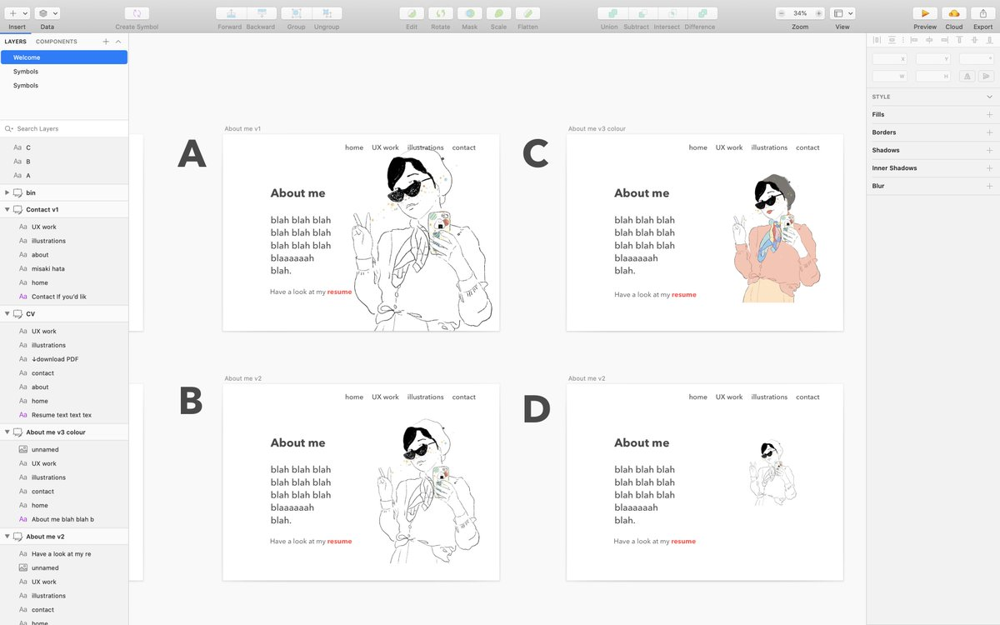

User Centred Design

NHS DIGITAL
Redesign of the NHS Service manual
Redesign of the NHS Service manual
test test hum drum test test test hum drum test test test hum drum test test test hum drum test test test hum drum test
NHS TEST & TRACE
Contact tracing website usability tests
Contact tracing website usability tests
test test hum drum test test test hum drum test test test hum drum test test test hum drum test test test hum drum test
NHS TEST & TRACE
Contact tracing website usability tests
Contact tracing website usability tests
test test hum drum test test test hum drum test test test hum drum test test test hum drum test test test hum drum test
NHS DIGITAL
Implementing inclusive design and research
Implementing inclusive design and research
test test hum drum test test test hum drum test test test hum drum test test test hum drum test test test hum drum test
111 ONLINE
Discovery into Mental Health pathway
Discovery into Mental Health pathway
test test hum drum test test test hum drum test test test hum drum test test test hum drum test test test hum drum test
CHANGE FOR LIFE
Accessibility redesign
Accessibility redesign
test test hum drum test test test hum drum test test test hum drum test test test hum drum test test test hum drum test
MAZARS/SUE RYDER
Letters to a stranger workshop
Letters to a stranger workshop
test test hum drum test test test hum drum test test test hum drum test test test hum drum test test test hum drum test
MISAKIHATA.COM
Creating an user centred portfolio
Creating an user centred portfolio
test test hum drum test test test hum drum test test test hum drum test test test hum drum test test test hum drum test
Redesign of the NHS digital service
manual
Brief: To conduct user research to understand how best to redesign the
NHS Service Manual and design system
before it becomes a live service.
Organisation: NHSD
Role: User research
Impact:
Date: Dec 2019
Other projects
User research for "how to write good questions" on NHS Service manual - NHS Digital
Design for 111 online mental health discovery - NHS Digital
User research for Contact Tracing service - NHS Test & Trace
User research, design and dev for this website read more